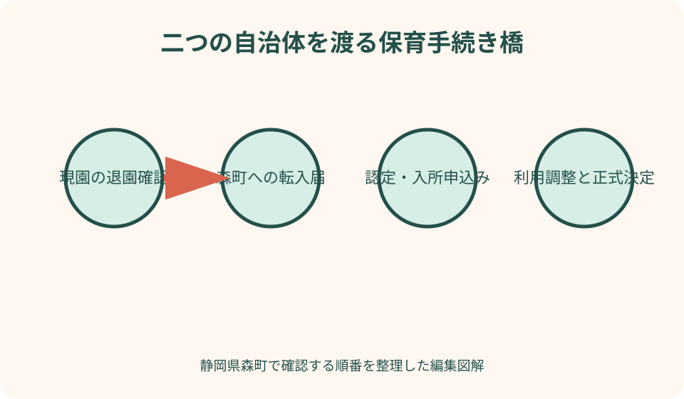
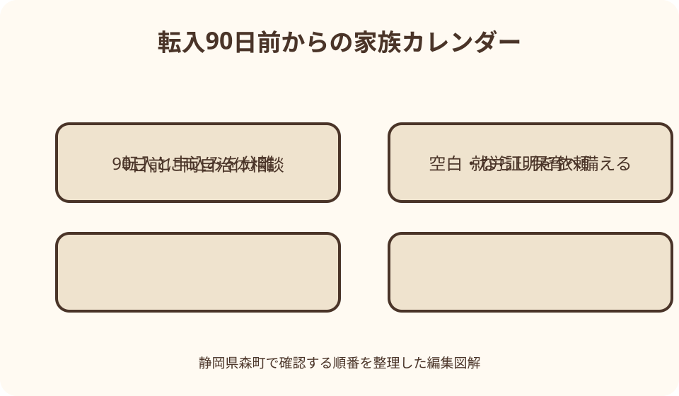

妊娠・子育て手続｜最終確認 2026-08-10
静岡県森町へ転入する子どもの保育手続き｜退園・申込み・利用調整
住所を森町へ移しても、現在の保育所等の利用が自動的に森町の施設へ引き継がれるわけではありません。現自治体の退園・転出手続き、森町への転入届、森町の教育・保育給付認定申請と入所申込み、勤務先の就労証明、利用調整は別々の手続きです。退園日と新しい利用開始日を先に同日と決めず、両自治体の回答と正式通知を一つの時間軸へ並べます。

編集イラスト森町への転入と保育手続きを別々に考える
最初の結論は、住民異動と保育所等の申込みを別工程にすることです。森町へ転入届を出すだけでは保育利用の認定や入所申込みは完了せず、現在の園から森町の園へ在籍情報が自動的に移るとも限りません。
工程表には、引っ越し予定日、現園の最終利用希望日、現自治体の退園届期限、森町への申込期限、転入届、入所希望月、復職・勤務開始日を並べます。一つでも未確定なら仮の日付と明記します。
森町公式の対象年度入所案内、保育所等一覧、転入届ページをそれぞれ確認します。保育の窓口は健康こども課幼稚園保育園係、住民異動は住民生活課住民係で、問い合わせ先も異なります。
この記事の確認日は2026年8月10日です。申込期間、転入予定者の条件、施設の受入状況は年度や時点で変わります。実行時は対象年度の森町公式ページと両自治体の個別回答を優先してください。
転入前相談で伝える七つの情報
森町への相談では、子どもの生年月日、現在の施設種別、引っ越し予定日、入所希望月、保護者の就労状況、希望施設、きょうだいの有無を伝えます。『空きはありますか』だけでなく、申込条件と次の手順を聞きます。
住所がまだ確定していない場合は、候補地域と契約予定日を説明し、転入予定者として申込みできるか、住所を証明する資料が必要かを確認します。賃貸申込中や住宅完成待ちなど、現在の段階を曖昧にしません。
現園をいつまで利用できるかは現自治体へ、森町の選考要件は森町へ聞きます。一方の回答をもう一方へ伝え、最終利用日と新規利用開始日の間に日数が生じるかを確認します。
相談記録には、電話日、担当部署、回答、未確認事項、次の連絡日を書きます。空き状況の口頭回答はその時点の情報であり、入所内定ではないため、後日変わる可能性も家族で共有します。
現園の退園手続きを先に確定しない
現在利用している園の退園届は、現自治体または施設の期限と様式を確認します。森町の入所が未決定の段階で最終日を確定すると、予定どおり決まらなかった場合に保育の空白が長くなる可能性があります。
ただし、転出後も現園を継続できるとは限りません。転出月末までか、広域利用へ切り替えられるか、転出日で終了するかは現自治体と森町の双方に確認が必要です。記事から継続可否は断定できません。
園へは、引っ越し予定、退園届の提出期限、最終利用日の変更可否、給食費・用品費の精算、在園証明など必要書類を尋ねます。担任への口頭連絡だけで行政手続きが済むと思わないようにします。
退園が決まったら、子どもの健康・発達、アレルギー、服薬、生活上の配慮を次の施設へどう引き継ぐか相談します。個人情報を保護者が無断で転送せず、施設間共有の同意や様式を確認します。
転出元自治体で確認すること
転出元では、転出届だけでなく、保育の認定終了、退園届、保育料の最終月、未納・還付、延長保育や給食費の精算を確認します。窓口が複数なら、担当と締切を分けて記録します。
現在の教育・保育給付認定証や支給認定情報が、森町申込みに使えるかを尋ねます。前自治体の認定があるから森町でも自動継続すると考えず、写しを参考資料として持参できるか確認します。
就労証明書を最近提出していても、森町用に再発行が必要な場合があります。転出元の控え、証明日、勤務条件を保存し、森町が指定する年度様式と有効期間を確認して勤務先へ依頼します。
転出後の保育利用を希望する場合は、広域入所・管外利用の相談が可能か、どちらの自治体を通して申請するかを聞きます。施設が了承しても自治体間の手続きが整うとは限りません。
森町への転入届と期限
森町公式は、森町外から転入した場合、引っ越しが完了した日から14日以内に転入届を出すよう案内しています。マイナポータルで転入予約はできますが、転入届そのものは来庁が必要です。
国内転入の基本的な持ち物として、転出証明書、窓口へ来る人の本人確認書類、該当者のマイナンバーカード等が案内されています。特例転入や国外転入、代理人では必要書類が変わります。
転入届の担当は住民生活課住民係です。保育申込みの健康こども課とは場所や確認内容が異なるため、同日に回れるか、受付時間、必要な順番を事前に問い合わせます。
実際に住み始める前の日付で転入届を出すことはできません。保育の選考要件に間に合わせるため住民異動日を形式的に早めるのではなく、引っ越し実態と町の案内に沿って手続きします。
転入予定者の選考・入所要件
森町の令和8年度入所案内では、転入予定で申し込む人は、入所希望月の前月までの転入が選考・入所要件とされています。『前月まで』の具体的な期限や確認方法は希望月を伝えて町へ確認します。
住宅契約日、鍵の受取日、引っ越し日、転入届の日は同じとは限りません。どの日をもって要件を確認するか、申込時に何を提出するかを健康こども課へ尋ねます。
引っ越しが遅れる可能性がある場合は、分かった時点で町へ連絡します。転入要件を満たせないときの選考、内定、申込み継続の扱いを家庭で推測せず、正式な指示を受けます。
転入予定を証明する書類を求められたら、売買契約、賃貸借契約などのどの部分が必要か確認します。価格、保証人、口座など不要な個人情報まで提出する前に、写しの範囲を尋ねます。
森町の入所申込みを新たに行う
森町で保育所等を利用するには、教育・保育給付認定申請と入所申込みが必要です。転出元で同じ認定を受けていても、森町の対象年度様式で新たに手続きする前提で準備します。
令和8年度案内では、申請書兼申込書、家庭状況確認シート、申請・申込チェックシート、保育を必要とする事由の証明書が基本書類として示されています。子ども一人ごとの提出範囲を確認します。
申込期間後も受付される場合がありますが、森町は期間内提出分から選考し、定員に達すれば期間後の申込みを選考しない場合があると説明しています。年度途中希望でも早期相談が必要です。
書類不足がある場合は受付できないと案内されているため、転入後に足りない書類を集めればよいと考えません。勤務先や前自治体からの資料を含め、締切から逆算します。
就労証明書を森町用に準備する
就労を保育が必要な事由とする家庭は、森町が対象年度に掲載する就労証明書を勤務先へ依頼します。前自治体の様式や国の標準様式をそのまま提出できると決めず、町の記載例も添えます。
令和8年度案内では、証明日から3か月以内の就労証明書が必要です。早すぎる発行で期限を過ぎず、遅すぎて申込期間へ間に合わないよう、勤務先の作成日数と郵送日数を見込みます。
転居に伴い勤務先、勤務地、勤務時間、在宅勤務の頻度が変わる場合、転居前の条件だけを証明してもらわず、いつから何が変わるかを会社に伝えます。予定欄の記載方法は勤務先と町へ確認します。
自営業・農林漁業等の人は、就労証明書に加え開業届・確定申告書等の写しが必要と森町は案内しています。転居で事業所住所が変わる場合の証明方法も事前相談します。
希望施設を生活動線から選ぶ
森町には認定こども園、認可保育所、小規模保育事業所があり、対象年齢、定員、保育時間が異なります。施設名だけで順位を決めず、自宅候補地、勤務先、きょうだいの学校、緊急連絡先から動線を確認します。
小規模保育所は原則0歳から2歳までなど、卒園後の移行も考える必要があります。現在の子どもの年齢と入園年度の年齢、次年度の選択肢を施設と町へ尋ねます。
見学では、保育内容、受入時間、ならし保育、給食、アレルギー対応、用品、送迎駐車、費用を確認します。見学できたことは入所枠の確保や内定を意味しません。
第一希望だけで通勤計画を作らず、第二・第三希望からの送迎も実際に走ってみます。森町の町なかと天方・三倉など北部では移動時間が変わるため、朝夕の道路状況も見込みます。
利用調整は入所予約ではない
森町は、希望者が多い場合、保護者の就労や家庭状況、きょうだいの入園状況などを総合して、利用調整指数表に沿い必要性が高い世帯から内定すると案内しています。
申込書を早く出せば必ず優先される先着順ではありませんが、申込期間を過ぎると選考対象にならない場合があります。期限内に不備なく提出することと、選考順位は別の問題です。
こども家庭庁も、2号・3号認定では、市町村が認定し、希望施設と施設状況、保育の必要性の程度を踏まえて利用調整すると説明しています。認定を受けたことだけで特定施設への入所は決まりません。
空き状況を電話で聞き、『今は空いている』と言われても申込時の受入を保証する回答ではありません。正式な内定・決定通知が届くまで、現園退園や勤務開始の確定に注意します。

内定と正式決定を分ける
森町の令和8年度案内では、内定のお知らせ時期と正式な入所決定時期が別に示されています。正式決定通知は入所希望月のおよそ1か月前とされ、通知後に決定施設へ連絡して手続きを進めます。
内定連絡を受けたら、転入要件、提出済み書類、勤務条件、入所希望月に変更がないか確認します。住所や仕事が変わった場合は、内定後でも速やかに町へ報告します。
正式通知前に施設用品を購入する場合、キャンセルや転園時の扱いを施設へ尋ねます。内定と契約・利用開始を同じと考えず、どの段階で費用が発生するか確認します。
入所決定後は、施設との面談、健康情報、アレルギー、慣らし保育、送迎者、緊急連絡先を整えます。町への申込みが終わっても、施設側の開始準備は別に残ります。
保育の空白期間を日付で見える化する
空白期間は、現園の最終利用日の翌日から森町の新しい施設の利用開始日までです。引っ越し日だけを基準にせず、土日祝日、園の休園日、ならし保育中の短時間利用もカレンダーへ入れます。
形式上は入所していても、ならし保育で通常勤務時間をカバーできない期間があります。森町は初めて入所する子どもについて、おおむね2週間程度は早めのお迎えが必要と案内しています。期間は施設や子どもにより異なります。
保護者の有給休暇、在宅勤務、育児休業終了日、家族の応援可能日を並べます。勤務先へは入所未決定の状況と、結果連絡の見込みを伝え、復職日を一方的に確定しないよう相談します。
空白が見込まれる場合は、森町の一時的な保育サービス、幼稚園の預かり、こども誰でも通園制度などが目的と条件に合うか確認します。代替サービスも空きや対象条件があり、連続利用を保証するものではありません。
空白期間の代替を確認する
代替策は、誰でも通園、一時預かり、幼稚園預かり、家族による保育、勤務調整などを候補として並べます。制度名が似ていても対象年齢、在園要件、利用時間、料金、申込先が違います。
森町のこども誰でも通園制度は、認可保育所等へ通っていない子どもを対象とする条件があります。現園在籍中や森町入所後に併用できると決めず、利用日時点の状況を伝えます。
幼稚園の預かり保育は、森町立幼稚園の在園児を基本とする区分があり、保育園入所待ちの子どもが一時的に使えるとは限りません。年齢と在園状況を明示して問い合わせます。
民間サービスや親族へ頼る場合も、送迎、費用、保険、緊急連絡、アレルギー、子どもの負担を確認します。空白を埋めることだけを優先し、複数の場所を短期間で転々とさせる影響も家族で考えます。
転入後に子どもの情報を引き継ぐ
新しい施設が決まったら、健康診断、予防接種、アレルギー、服薬、発達、食事、睡眠、排せつ、好きな遊び、安心する声かけを整理します。診断や配慮を保護者の言葉だけで変更せず、必要な書類を確認します。
食物アレルギーや医療的配慮がある場合は、入所決定前の見学・相談が必要か町と施設へ早めに確認します。前園の対応が新園でもそのまま可能とは限りません。
母子健康手帳、健診結果、予防接種記録は原本と写しの扱いを分けます。施設へ提出する範囲を確認し、家族用控えを作っても原本の保管場所を明確にします。
子どもには、引っ越し、現園との別れ、新しい園を一度に説明しすぎず、年齢に合う言葉で予定を伝えます。見学写真や新しい通園路を使い、未決定の段階では決まったと断言しません。
保育料と実費の切り替え
現自治体の保育料最終月と森町の算定開始月を確認します。月途中の転出・入所で日割りになるか、二重請求に見える期間がどう扱われるかは、両自治体へ個別に聞きます。
森町の3歳未満の保育料は市町村民税額に基づき決まり、転入者は課税証明書を求められる場合があります。基準日と必要年度を確認し、転出元で取得できる時期に準備します。
給食費、教材費、用品費、延長保育料は施設ごとの案内を確認します。現園の返金・精算、新園の初期購入を別々の月へ置き、引っ越し費用と同時期に重なることを見込みます。
口座振替は、現園分の停止と新園分の登録が自動連携するとは限りません。最終引落日、残高、返金口座、新しい登録期限を一覧にします。
早めに転入相談する良い点
良い点は、現園の退園期限と森町の申込期間を同時に確認できることです。片方だけを先に進めるより、保育の空白が発生する可能性を早く把握できます。
森町の施設種別と保育時間を早めに見ると、住まい候補からの送迎、勤務先までの移動、きょうだいの通学を比較できます。第一希望以外の生活動線も準備できます。
就労証明書を先に勤務先へ依頼すれば、様式違い、証明日、転居後の勤務地、育休復職予定などの修正時間を確保できます。申込締切直前の再発行を避けやすくなります。
転入要件を早期に知れば、賃貸契約や引っ越し業者の都合だけで日程を決めず、実際の居住開始、転入届、入所希望月を一つのカレンダーで検討できます。
森町の案内へ注文したい点
注文したい点は、転入予定者向けに、相談開始から入所決定までを一枚で示す専用チェックリストがあると分かりやすいことです。現自治体、森町住民窓口、保育窓口、勤務先、施設の五者を並べられます。
転入予定を証明する資料、入所希望月前月までの転入要件、住所未確定時の相談方法がFAQ化されると、住宅探し中の家庭も早く動けます。個別判断が必要な部分は問い合わせへ誘導できます。
年度途中入所の空き状況は変動するため、単なる空き数だけでなく、更新日、申込締切、結果予定日が一緒に表示されると誤解が減ります。空き表示が内定保証ではない注意も必要です。
保育の空白に使える可能性があるサービスを、対象年齢、在園要件、利用時間、申込先で比較できると助かります。代替サービスが必ず利用できると誤認させない表示も欠かせません。
希望どおり決まらない場合の代案・結論
代案・結論として、第一希望へ入れない場合に備え、通園可能な第二・第三希望、勤務時間の調整、家族の送迎分担、短期の代替保育を申込前から検討します。
どの施設にも内定しなかった場合は、次回選考へ申込みが継続されるか、希望変更、追加書類、求職・就労状況の更新が必要かを町へ確認します。連絡がないまま自動継続すると決めません。
現園を退園済みなら、前園へ戻れるとは限りません。現自治体への再申込み、森町の代替サービス、勤務先の休暇・在宅勤務を同時に相談し、一つの策だけへ依存しないようにします。
最終的には、転入届、保育認定、入所申込み、利用調整、施設手続きを順に通す必要があります。転入や申込受理は入所・継続の保証ではなく、正式通知まで未確定として扱います。
図解案1：二つの自治体を渡る保育手続き橋
一つ目の図解は、左岸を転出元自治体、右岸を森町として、中央に引っ越し日を置きます。左岸には退園届、最終利用日、保育料精算、健康情報の引継ぎを配置します。
右岸には転入届、教育・保育給付認定申請、入所申込み、利用調整、正式決定、施設面談を並べます。橋の上へ就労証明書と課税証明書を運ぶ家族を描きます。
現園最終日と新園開始日の間は、空白日数が見える赤ではない空白帯にし、ならし保育期間も別の薄色で示します。危険をあおらず、勤務調整が必要な期間を可視化します。
背景には森町の山並みと保健福祉センター、町内施設への分岐路を描きます。第一希望以外へ決まる可能性を複数の道で示し、一本の直線で自動移行する印象を避けます。

図解案2：転入90日前からの家族カレンダー
二つ目は、転入予定日の90日前、60日前、30日前、転入日、入所希望月を横に並べるカレンダーです。90日前には両自治体相談と施設候補、60日前には就労証明依頼を置きます。
30日前には現園の退園期限、森町申込書類、住宅契約、転入要件を確認します。転入日には住民異動と保育窓口への報告を別々のチェック欄にします。
入所希望月の前には内定・正式決定、施設面談、用品準備を並べ、開始後にはならし保育と通常勤務復帰を分けます。正式通知前の項目には『予定』の札を付けます。
下段には保育空白への備えとして、有給、在宅勤務、親族、利用可能性を確認した一時的サービスを置きます。利用確定と候補を色分けし、家族が誤認しない図にします。
大石の視点：住まいと保育を同時に決めすぎない
大石の視点では、住まいの契約と第一希望園を一本の条件で結びつけすぎないことが大切です。入所は利用調整があり、希望施設へ決まる保証がないため、複数施設への送迎が可能な生活動線を確認します。
森町の町なか、飯田、向天方、北部では、施設と勤務先までの距離が違います。朝の所要時間だけでなく、夕方の迎え、発熱時の呼び出し、冬季や大雨時の道も実際に走ります。
空き家や実家へ転入する家庭も、住所が確保できることと保育が確保できることは別です。改修工事の遅れで転入日が変わる場合、選考要件へ影響する可能性を町へ早めに伝えます。
引っ越しは大人にも子どもにも負担が集中します。書類を完璧にそろえることだけでなく、現園との別れ、新しい環境、保育の空白を家族がどう支えるかを予定表へ入れてください。
家族で使う転入保育チェックリスト
チェックリストの最上段には、転入予定日、入所希望月、現園最終日、勤務開始・復職日を書きます。次に現自治体、森町住民窓口、森町保育窓口、勤務先、現園・希望園の担当を並べます。
書類欄は、転出証明書、本人確認書類、申込書、家庭状況確認シート、就労証明書等、転入予定資料、課税証明書、健康情報へ分けます。必要・不要・確認中を記号で示します。
結果欄には、相談回答、申込受付、内定、正式決定、施設契約を別々に置きます。電話で空きがあると言われただけで内定欄へ印を付けないよう、根拠となる通知日を書きます。
空白対策欄は、有給、在宅勤務、家族応援、一時的サービスの候補、申込日、利用確定日を記録します。候補と確定を分ければ、使える前提で勤務予定を組む誤りを減らせます。
一次情報を確認する順番
最初に森町の対象年度入所申込みページで、申込期間、転入予定者要件、必要書類、利用調整、結果時期を確認します。古い年度ページは比較用に留めます。
次に『保育所等について』で、施設種別、対象年齢、定員、保育時間、場所を調べます。各施設の最新情報と見学は施設へ直接確認します。
住民異動は森町の転入届ページで、届出期間、持ち物、代理、マイナポータル予約の範囲を確認します。保育申込みと同じ担当だと思わないようにします。
こども家庭庁の新制度ページは、認定、利用申込み、利用調整、決定という全国的な順番を理解する資料です。森町固有の締切や転入要件は町公式へ戻ります。
森町への問い合わせ例
保育申込みの窓口は健康こども課幼稚園保育園係で、公式ページの電話番号は0538-86-6300です。転入届は住民生活課住民係、電話0538-85-6312です。質問内容で連絡先を分けます。
保育窓口には、『○月に森町へ転入し、○月入所を希望します。現在は他市の保育園を利用中です。転入予定者の申込期限、必要書類、前月までの転入要件を確認したいです』と伝えます。
住民窓口には、『○月○日に引っ越す予定です。国内転入で家族○人、マイナンバーカードがあります。転入届の来庁期限と必要書類を確認したいです』と、保育の質問を混ぜず尋ねます。
現自治体には、『森町へ転出予定です。現在の園の最終利用日、退園届期限、転出後の継続可否、保育料精算を確認したいです』と伝え、回答日を森町への相談記録へ反映します。
まとめ：正式決定まで空白へ備える
森町への転入保育は、転出元の退園、森町への転入届、森町の認定・入所申込み、利用調整、新施設の開始準備という複数工程です。どれか一つで全てが完了するわけではありません。
転入予定者は、対象年度の要件と入所希望月前月までの転入条件を確認します。就労証明書、申込書、家庭状況、転入予定資料などを期限から逆算して準備します。
申込みを受理されても、空きや利用調整により入所できないことや、別施設になることがあります。現園の継続も両自治体の確認なしには保証されません。
今日の一歩は、現園最終希望日、森町転入日、入所希望月、勤務開始日を一枚に書き、両自治体へ同じ日に相談することです。空白期間の候補も、利用確定と未確定を分けて準備してください。
公式情報・確認先
掲載内容は次の一次情報を基礎に整理しました。営業、料金、催し、交通は変わるため、出発前または手続き前にリンク先で最新情報を確認してください。
- 令和8年度 保育所等入所の申込みについて（静岡県森町、2026-08-10確認）
- 保育所等について（静岡県森町、2026-08-10確認）
- 転入届（静岡県森町、2026-08-10確認）
- 令和8年度からこども誰でも通園制度が始まります（静岡県森町、2026-08-10確認）
- 令和8年度 森町立幼稚園預かり保育の申込みについて（静岡県森町、2026-08-10確認）
- よくわかる子ども・子育て支援新制度（こども家庭庁、2026-08-10確認）
- 就労証明書に関する情報（こども家庭庁、2026-08-10確認）
- ここdeサーチについて（こども家庭庁、2026-08-10確認）